Neste apêndice será descrito um guia de utilização passo-a-passo do simulador de corridas desenvolvido. Mais documentação pode ser encontrada em https://zecarlos94.github.io/pvsio_web_2D_driving_simulator/car_docs/ e em https://zecarlos94.github.io/pvsio_web_2D_driving_simulator/car_private_api_docs/ ( ambos em inglês ).
Criar uma Simulação Nova
Nesta seção apresenta-se o guia de utilização passo-a-passo para criar uma nova pista, i.e. os novos ambientes circundantes a renderizar, com o widget TrackGenerator e, para renderizar, de seguida, a mesma com o widget Arcade.
O resultado final deverá ser uma renderização semelhante à que se apresenta na figura 1.
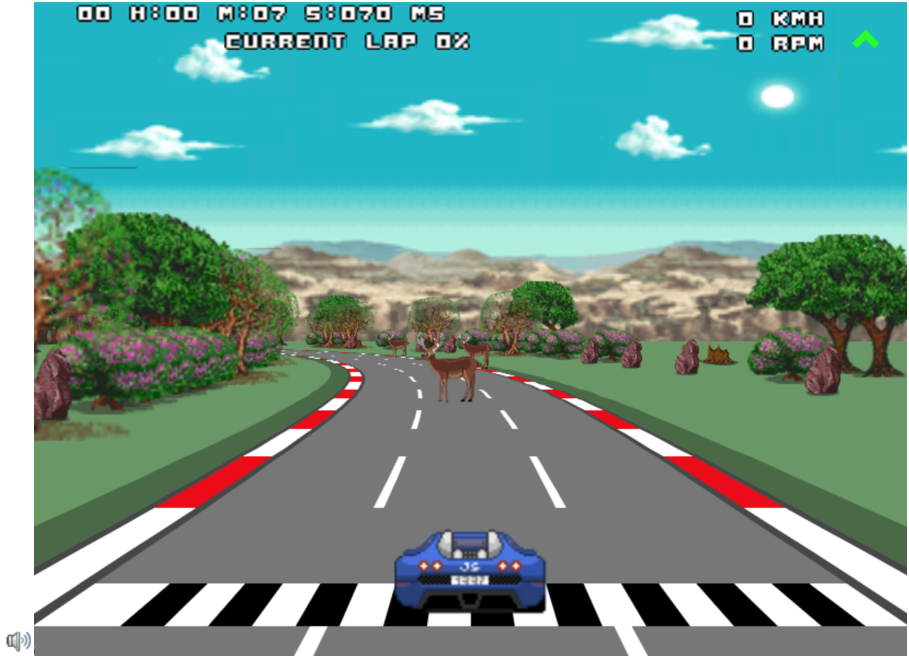
A figura 2 permitiu agrupar todas as imagens individuais numa só, tornando o simulador mais eficiente, devido ao menor número de leituras de ficheiros, e mais leve, visto que uma imagem ocupa menos espaço que um conjunto de imagens separadas. Para tal utilizou-se o conceito de spritesheets que será abordado mais à frente.
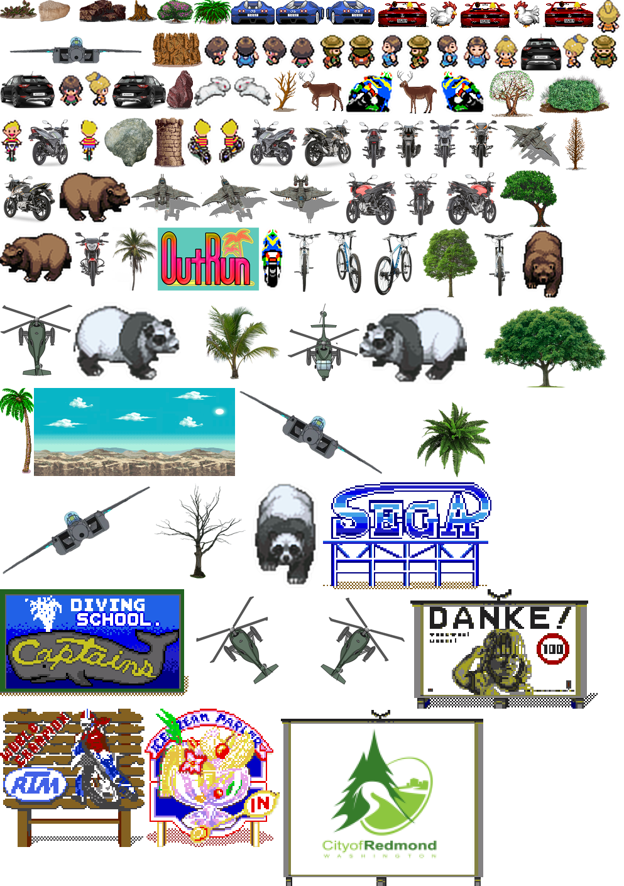
-
Etapas do utilizador, usando o widget de customização (mais fácil)
Estas etapas são as etapas necessárias para a criação de uma nova simulação, dedicada aos utilizadores menos conscientes, onde o utilizador apenas terá de preencher os menus de customização, para personalizar a simulação, não definindo, portanto, os campos opcionais manualmente (não necessita de saber programar).
Um exemplo de valores possíveis para preencher esses menus de customização é apresentado em http://github.com/zecarlos94/pvsio-web/tree/gamingDev/src/client/app/widgets/car/configurations/CustomizationFieldsPossibleValues_Demo_Driving_Simulator.txt.
Primeiro, abra o endereço http://localhost:8082/demos/driving_simulator/ no browser Google Chrome. Deverá ter aparecido no ecrã um conjunto de menus de customização que deverá preencher por forma a customizar a simulação desejada.
-
Selecione a imagem do volante, no menu apresentado na Figura 3, que pretende usar no design do painel de instrumentos automotivo, que será usado durante a simulação.
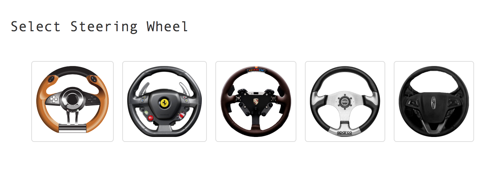
Figura 3 - Menu de Seleção do Volante -
Utilize os color pickers, no menu apresentado na Figura 4, para escolher as cores dos ambientes circundantes a renderizar posteriormente.
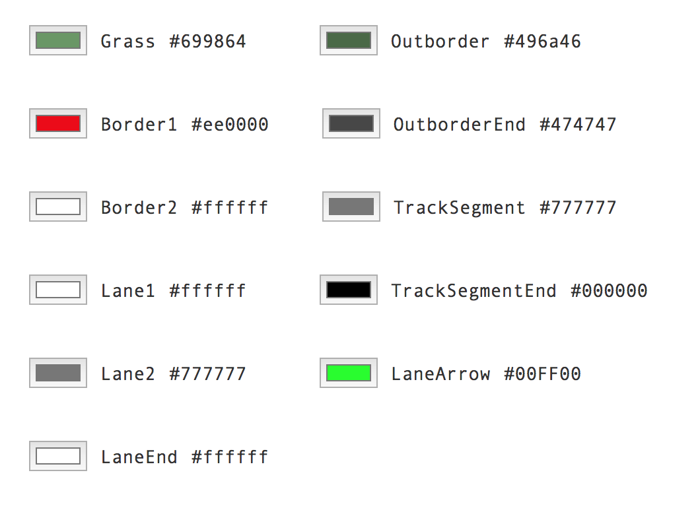
Figura 4 - Menu de Seleção das Cores da Pista - grass1 é a cor da paisagem (verde claro na Figura 1)
- border1 é a cor principal do delimitador (delimitador vermelho na Figura 1)
- border2 é a cor secundária do delimitador (delimitador branco na Figura 1). Alterna entre a cor border1 e a cor border2, com base no número de segmentos definidos no campo opcional numberOfSegmentPerColor, que por padrão são 4 segmentos.
- outborder1 é a cor do espaço entre a paisagem e a borda delimitadora da pista, ou seja, a berma (verde escuro na Figura 1)
- outborder_end1 é a cor da borda do delimitador da pista (cinza escuro na Figura 1)
- track_segment1 é a cor da pista (cinza claro na Figura 1)
- lane1 é a cor principal dos separadores de faixas na pista (faixas brancas dentro da pista na Figura 1)
- lane2 é a cor secundária dos separadores de faixas na pista (faixas cinza claro dentro da pista, i.e. possui a mesma cor que a cor da pista, para ficar invisível ao alternar as cores, obtendo o efeito de linhas descontínuas. Para se obter linhas contínuas apenas será necessário fornecer a mesma cor a lane1 e a lane2, na Figura 1)
- laneArrow1 é a cor da seta guia apresentada no canto superior direito do simulador (seta verde na Figura 1)
- track_segment_end é a cor principal da linha de ínicio/fim da pista (listras pretas, na linha de ínicio/fim, na Figura 1)
- lane_end é a cor secundária da linha de ínicio/fim da pista (listras brancas, na linha de ínicio/fim, na Figura 1)
-
Insira dentro dos parêntesis rectos, no menu apresentado na Figura 5, a topografia da pista, que será construída e renderizada.
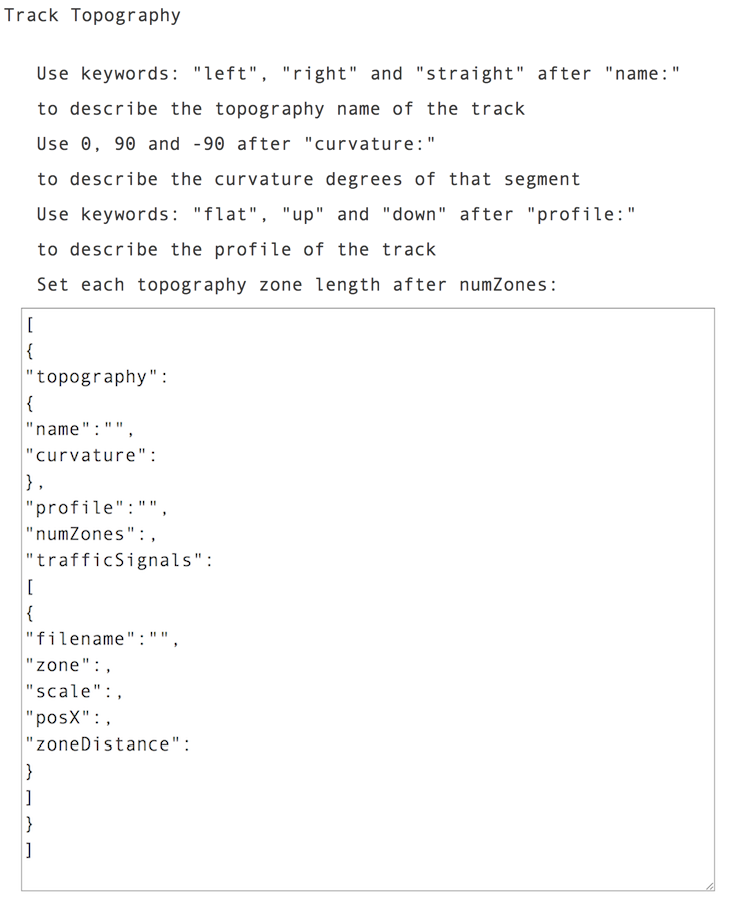
Figura 5 - Menu de Seleção da Topografia e Perfil de Elevação da Pista Utilize apenas as palavras-chave: left, right e straight para descrever a topografia da pista, depois da propriedade name e utilize apenas as palavras-chave: flat, up e down para descrever o perfil de elevação da pista depois da propriedade profile. Utilize ângulos, em graus, para definir o ângulo de curvatura depois da propriedade curvature.
O ângulo 0 representa uma linha reta. Para representar curvaturas à esquerda, o ângulo deve estar entre 0 e -90. Para representar as curvaturas direitas, o ângulo deve estar entre 0 e 90. Este ângulo não representa o ângulo de curvatura final, mas será utilizado para calcular o mesmo, talvez como trabalho futuro se possa implementar essa funcionalidade.
Na propriedade numZones deverá escrever o número de blocos consecutivos a contruir e a renderizar com essa topografia e perfil. Por exemplo, se colocar o número 2 e pretender criar uma curva plana à esquerda, i.e. name: left e profile: flat, então serão criados todos os segmentos necessários para renderizar 2 curvas planas à esquerda consecutivas na pista. Por defeito o valor deverá ser 1 para as curvas, visto que o maior benefício desta propriedade é permitir a construção de linhas retas com diferentes comprimentos, ao colocar blocos consecutivos de linhas retas, no entanto o utilizador pode fazer o que desejar.
Para descrever os sinais de trânsito é necessário preencher a propriedade trafficSignals. Nesta propriedade o utilizador deverá fornecer os sinais (campos filename) a colocar, em que zona da topografia descrita, campos zone, serão colocados, em que posição horizontal, campos posX, serão colocados, qual a escala, campos scale, a aplicar a esses sinais e em que posição vertical serão colocados, isto é, a que distância da zona serão colocados, sendo que a distância máxima corresponde ao valor de zoneSize (tamanho máximo de cada zona).
{ "filename":"50kmh_limit", "zone": 1, "scale": 2.3, "posX": 0.4, "zoneDistance": 50 }Por exemplo, o objeto, apresentado no excerto acima, representa o sinal de trânsito cujo nome coincide com o nome da imagem presente no ficheiro de mapeamento de coordenadas JSON da spritesheet. Ou seja, a imagem "50kmh_limit.png" encontra-se agrupada na spritesheet fornecida pelo utilizador.
Este sinal de trânsito será colocado na zona 1, com a escala de 2.3, i.e. será ampliado 2.3 vezes em relação ao tamanho original, e será colocado na posição horizontal 0.4, i.e. no lado direito, e a uma distância de 50 em relação ao tamanho total da zona, que por defeito é 250. Então, verifica-se que este sinal de trânsito aparecerá na parte inicial da zona na topografia definida.
O processo é semelhante para todos os restantes sinais de trânsito, sendo que o valor inserido no campo zone deverá ser sequencial, isto é, se o utilizador declarar mais que uma topografia, as zonas que compõem a topografia final (conjunto de todas as topografias) deverão ter numeração sequencial.
Ou seja, o campo zone não diz respeito apenas à topografia local, mas sim à topografia global. Por exemplo, se trackLayout possuir três topografias, curva à esquerda, linha recta e curva à direita, e onde cada topografia possui o valor dois no campo numZones, i.e. a pista possuirá duas curvas à esquerda consecutivas, duas linha rectas consecutivas e duas curvas à direita consecutivas, o que perfaz um total de seis zonas.
Então, ao definir os sinais de trânsito de cada uma das topografias será necessário identificar no campo zone o valor de um a seis em vez de um a dois. Isto é, se a topografia curva à esquerda tiver um sinal de trânsito, este deverá ter o valor um ou dois no campo zone e se a topografia curva à direita tiver um sinal de trânsito, este deverá ter o valor cinco ou seis no campo zone.
-
Insira o nome do ficheiro de configuração JSON da spritesheet, no menu apresentado na Figura 6. Ou seja, forneça o nome do ficheiro com o mapeamento de coordenadas da imagem spritesheet, que agrupa todos os sprites utilizados na simulação.
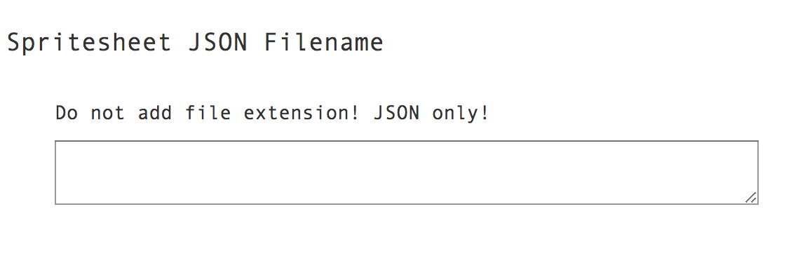
Figura 6 - Menu de Seleção do Ficheiro JSON de Mapeamento de Coordenadas da Imagem Spritesheet -
Insira o nome da imagem spritesheet, no menu apresentado na Figura 7, que agrupa todos os sprites utilizados na simulação.
Caso pretenda uma simulação arcade, deverá fornecer o nome das duas imagens spritesheet necessárias, uma com os sprites das letras (fonte a utilizar) e outra com todos os objetos e obstáculos a renderizar.
No caso de desejar uma simulação realista será apenas necessário fornecer a imagem spritesheet com todos os objetos e obstáculos a renderizar. Este tipo de simulação é escolhida num campo opcional do widget Arcade, que será abordado no tutorial para os utilizadores mais conscientes.
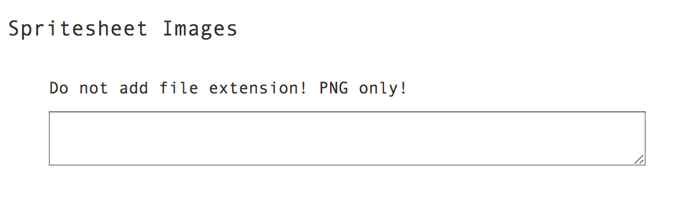
Figura 7 - Menu de Seleção das Imagens Spritesheet -
Insira entre os parêntesis rectos, no menu apresentado na Figura 8, os sprites a colocar na paisagem, separados por ','. Por exemplo, se o utilizador desejar colocar apenas àrvores na paisagem, cuja imagem possui o nome "tree.png", na imagem spritesheet, fornecida no menu apresentado na Figura 7, o utilizador deverá colocar "tree" no campo filename, colocar o respetivo valor da escala a aplicar a esta àrvore no campo scale e colocar as posições horizontais onde poderá ser colocado no campo positionsX.
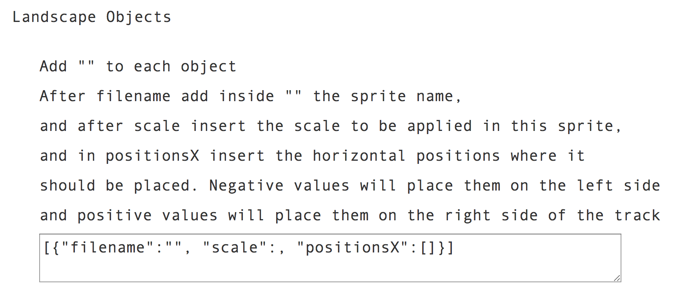
Figura 8 - Menu de Seleção dos Objectos da Paisagem -
Insira entre os parêntesis rectos, no menu apresentado na Figura 9, os sprites a colocar dentro da pista, isto é, os obstáculos a contornar na simulação, separados por ','. Por exemplo, se o utilizador desejar colocar apenas pedras como obstáculos dentro da pista, cuja imagem possui o nome "rock2.png", na imagem spritesheet, fornecida no menu apresentado na Figura 7, o utilizador deverá colocar "rock2" no campo filename, colocar o respetivo valor da escala a aplicar a esta pedra dentro da pista scale e colocar as posições horizontais onde poderá ser colocado dentro dos limites da pista positionsX.
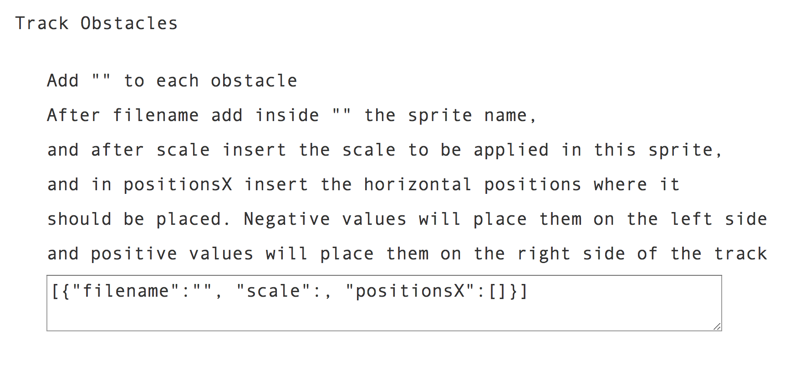
Figura 9 - Menu de Seleção dos Obstáculos dentro da Pista -
Preencha os parâmetros necessários à simulação, apresentados no menu na Figura 10. O parâmetro numZones deverá ter o número total de blocos a renderizar, que será igual à soma de todos os parâmetros numZones fornecidos na definição da topografia, numa das etapas anteriores. O parâmetro zoneSize deverá possuir o comprimento de cada bloco a renderizar, por defeito o valor é 250.

Figura 10 - Menu de Seleção dos Parâmetros da Pista -
Indicar o veículo a utilizar na simulação, no menu na Figura 11, presente no ficheiro de configuração JSON e na imagem spriteheet fornecidos, nas etapas 4 e 5. Os tipos de veículo disponíveis são airplane, bicycle, car, helicopter e motorbike.
Contudo para escolher o veículo será necessário que este exista nos ficheiros supracitados, para que o motor de renderização saiba onde pode ir recolher a imagem desse veículo. Por exemplo, se o ficheiro de configuração JSON e a imagem spriteheet possuírem as três imagens de um helicóptero, isto é, as imagens com o helicóptero virado para a frente, para a esquerda e para a direita, cujos nomes das imagens são "helicopter_faced_front.png", "helicopter_faced_left.png" e "helicopter_faced_right.png", tal como já foi explicado no capítulo de implementação, então o utilizador deverá escrever true,false,"helicopter",1.
- O valor true indica que a simulação deverá mostrar a imagem do veículo escolhido pelo utilizador.
- O valor false indica que as imagens a utilizar na simulação não são realistas, ou seja, o utilizar está a indicar que a simulação será do tipo arcade, i.e. com gráficos semelhantes aos jogos de arcade antigos.
- O valor 1 indica o índice da imagem. Se o utilizador colocar 1, o motor de renderização irá procurar as imagens "helicopter1_faced_front.png", "helicopter1_faced_left.png" e "helicopter1_faced_right.png" e caso não encontre nenhuma, irá procurar, por defeito, por "helicopter_faced_front.png", "helicopter_faced_left.png" e "helicopter_faced_right.png".
Caso o utilizador pretenda uma simulação realista, deverá escrever true,true,"real\_helicopter",1, onde as imagens "real_helicopter1_faced_front.png", "real_helicopter1_faced_left.png" e "real_helicopter1_faced_right.png" deverão existir no ficheiro de configuração JSON e na imagem spriteheet.
De igual forma, se estas imagens não forem encontradas, o motor de renderização irá procurar "real_helicopter_faced_front.png", "real_helicopter_faced_left.png" e "real_helicopter_faced_right.png".
Caso o utilizador pretenda que a simulação não renderize a imagem do veículo realista deverá escrever false,true,"real_helicopter",1.
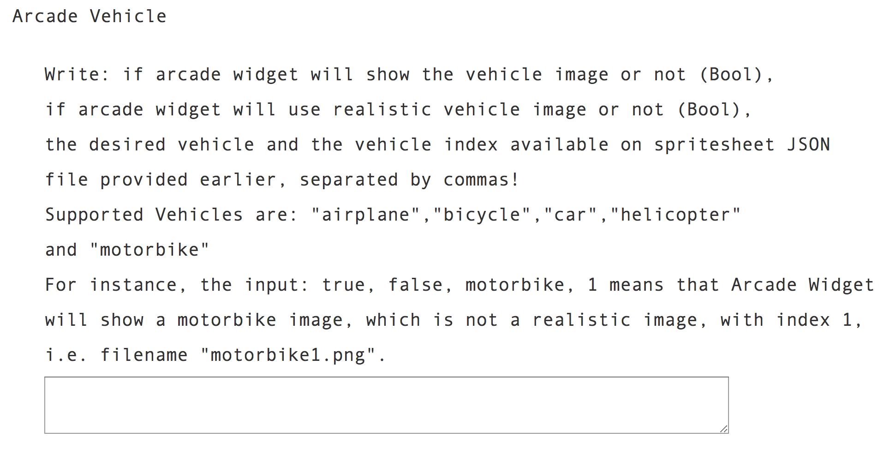
Figura 11 - Menu de Seleção do Veículo -
Selecione outras opções de customização para os widgets do painel de instrumentos automotivo, que serão renderizados na simulação, e outros aspetos de renderização utilizando os seguintes sliders, na Figura 12.
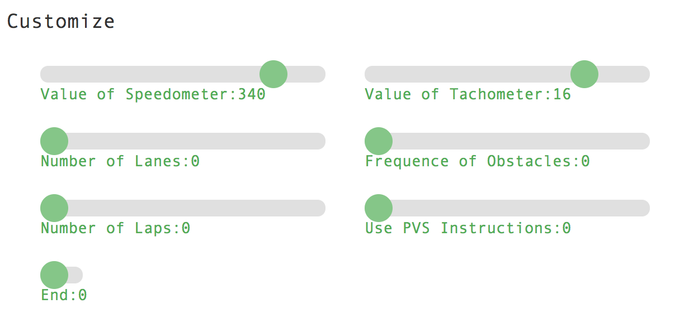
Figura 12 - Menu de Seleção de Intervalos - Selecione os valores máximos que os widgets Speedometer e Tachometer terão, nos intervalos 'Value of Speedometer' e 'Value of Tachometer', na Figura 13. Se os valores indicados nestes intervalos forem 200 e 9, respetivamente, e se o volante selecionado for o volante porsche (volante roxo), então o painel de instrumentos automotivo final, que será utilizado durante a simulação, será o painel apresentado na Figura 14.
- Selecione o número desejado de faixas, a renderizar dentro da pista durante a simulação, no intervalo 'Number of Lanes', na Figura 15.
- Selecione a frequência dos obstáculos, na Figura 16, a serem colocados dentro da pista, durante a simulação, no intervalo 'Frequence of Obstacles', ou seja, escolha em quantas iterações um novo obstáculo surge.
- Selecione o número desejado de voltas, na Figura 17, a ser renderizado pelo widget Arcade durante a simulação, no intervalo 'Number of Laps'.
- Escolha se o widget Arcade usará as instruções do PVS durante a simulação, na Figura 18. Por padrão, valor 0, usará instruções do PVS para atualizar o estado do veículo durante a simulação. Este intervalo permite testar a diferença na velocidade dos processos de renderização, já que as instruções do PVS tornam a simulação mais lenta do que calcular esses valores internamente no widget.
- Para terminar a customização, deslize o último intervalo, na Figura 19, para a direita. Após essa ação, deverá surgir no ecrã o conjunto de widgets, de acordo com a customização realizada. Caso o ecrã fique branco, o utilizador deverá refrescar o browser, visto que o último poderá não ter lido a totalidade dos ficheiros de configuração, por exemplo, devido a uma conexão à internet pior.
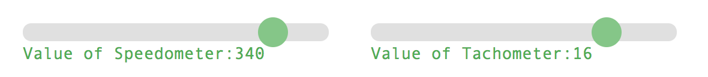
Figura 13 - Menu de Seleção dos Intervalos dos widgets Speedometer e Tachometer 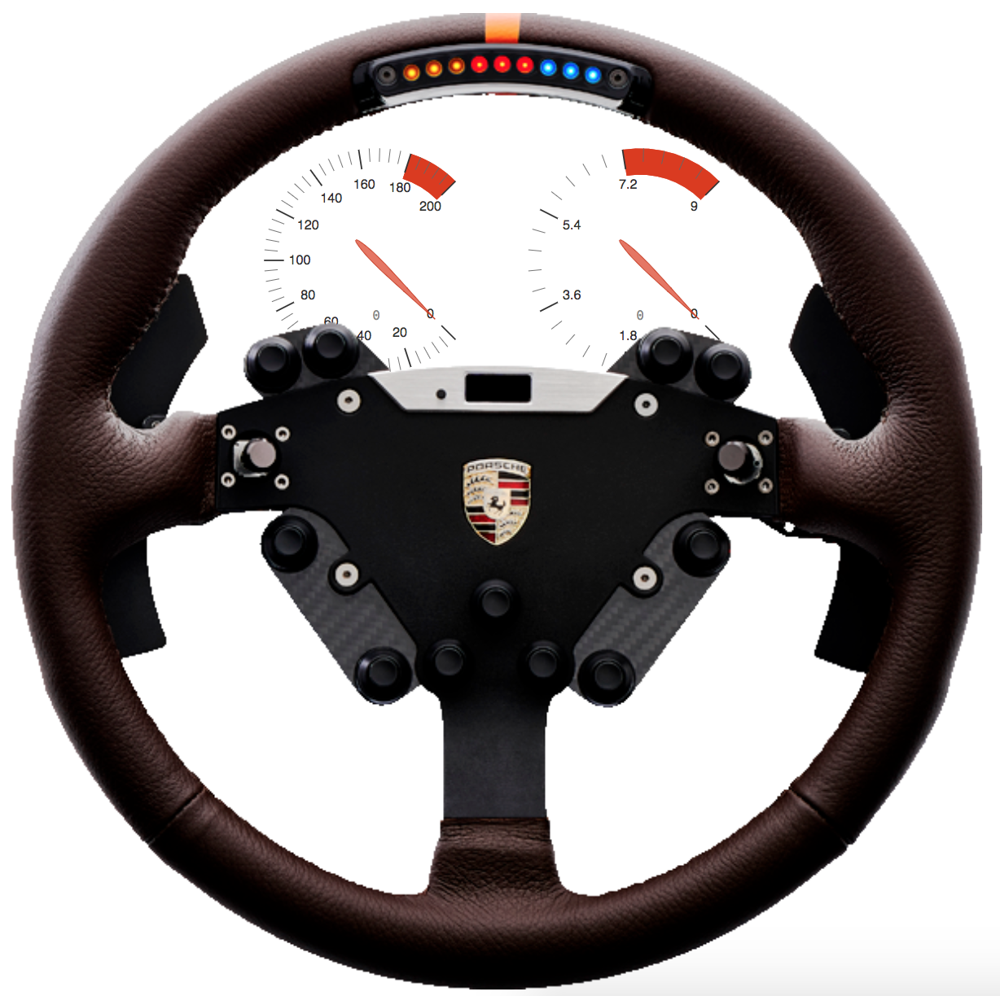
Figura 14 - Resultado da Customização 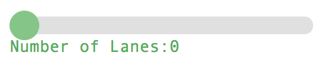
Figura 15 - Menu de Seleção do Número de Faixas na Pista 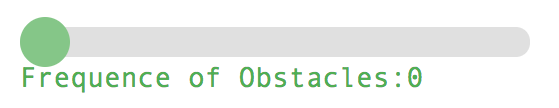
Figura 16 - Menu de Seleção da Frequência dos Obstáculos 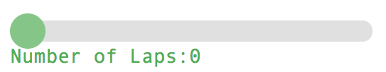
Figura 17 - Menu de Seleção do Número de Voltas 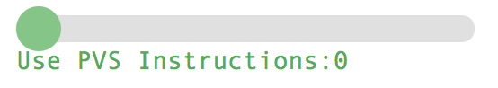
Figura 18 - Menu de Seleção da Utilização das Instruções PVS 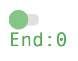
Figura 19 - Slider para Terminar a Customização
Embora não tenha sido um objetivo nesta dissertação, o widget Customization foi criado para facilitar o processo de simulação. No entanto, como tal não era uma prioridade, esse widget poderá ser aprimorado no futuro.
Por exemplo, adicionar outras opções de customização, que correspondam aos campos opcionais que os widgets TrackGenerator e Arcade possuem, e que não são preenchidos com os atuais menus.
-
-
Etapas do utilizador, com apenas configurações manuais (mais difícil)
Estas etapas são dedicadas aos utilizadores mais conscientes, ou seja, o utilizador deverá ter conhecimentos de programação minímos, visto que é este que define, manualmente, todos os campos opcionais e que utiliza as APIs desenvolvidas, no ficheiro https://github.com/zecarlos94/pvsio-web/blob/gamingDev/examples/demos/old_appearance_arcade_game_simulator/js/index.js.
Atualmente é possível testar a demonstração arcade, em http://localhost:8082/demos/old_appearance_arcade_game_simulator/, para testar as interações PVS-widget Arcade, i.e. utilizar o estado PVS para atualizar o estado do widget Arcade.
Na demonstração http://localhost:8082/demos/old_appearance_track_generator_simulator/ é possível criar uma nova pista arcade utilizando o widget TrackGenerator.
É nesta demonstração que o utilizador pode criar a pista desejada, utilizando os métodos que geram a pista aleatoriamente ou utilizando os métodos que geram a pista com base no layout fornecido. O excerto de código apresentado a seguir descreve a criação de uma pista que é composta por um bloco de uma curva plana à esquerda, seguida de um bloco de linha reta para baixo, seguida de uma curva plana à direita.
let trackGenerator = {}; trackGenerator.trackGeneratorWidget = new TrackGenerator("trackGeneratorWidget", { top: 80, left: 650, width: 780, height: 650 }, { parent: "content", // defines parent div, which is div id="body" by default spritesFilename: "spritesheet", // defines spritesheet configuration filename, which is "spritesheet.json" by default render: { depthOfField: 150, camera_distance: 30, camera_height: 270 }, trackSegmentSize: 5, numberOfSegmentPerColor: 4, numLanes: 3, laneWidth: 0.02, trackParam: { numZones: 3, // number of different portions of the track zoneSize: 250 // length of each numZones (the bigger this value. the longer it will take to finish) }, // Information regarding current controllable_vehicle's car controllable_vehicle: { position: 10, speed: 0, acceleration: 0.05, deceleration: 0.3, breaking: 0.6, turning: 5.0, posx: 0, maxSpeed: 15 }, objects: [ { filename:"tree", scale: 3.5, positionsX: [ -2.4, 2.3 ] }, { filename:"stump", scale: 3.5, positionsX: [ -2.9, 4.2 ] }, { filename:"boulder", scale: 3.5, positionsX: [ -1.8, 1.6 ] }, { filename:"tree2", scale: 3.5, positionsX: [ -1.6, 1.8 ] }, { filename:"brunetteGirlBack", scale: 6, positionsX: [ -1.7, 1.9 ] }, { filename:"bush2", scale: 6, positionsX: [ -1.9, 1.7 ] }, { filename:"hatManBack", scale: 7, positionsX: [ 2.9, -2.7 ] } ], obstacle: [ { filename:"dead_tree2", scale: 2.75, positionsX: [ 0.4 ] }, { filename:"column", scale: 2.75, positionsX: [ 0.4 ] }, { filename:"dearRight", scale: 1.75, positionsX: [ -0.4, 0.4, -0.3, 0.2, 0 ] } ], obstaclePerIteration: 20, trackColors: { grass1: "#699864", border1: "#e00", border2: "#fff", outborder1: "#496a46", outborder_end1: "#474747", track_segment1: "#777", lane1: "#fff", lane2: "#777", laneArrow1: "#00FF00", track_segment_end:"#000", lane_end: "#fff" }, trackLayout: [ { topography: { name:"left", curvature: -90 }, profile: "flat", numZones: 1, trafficSignals: [] }, { topography: { name:"straight", curvature: 0 }, profile: "down", numZones: 1, trafficSignals: [] }, { topography: { name:"right", curvature: 90 }, profile: "flat", numZones: 1, trafficSignals: [] }, ], callback: onMessageReceived });O primeiro argumento do construtor é o identificador do widget. O segundo argumento são as coordenadas onde o widget será colocado. E o terceiro argumento são os campos opcionais onde o utilizador define as características do novo ambiente de teste a criar, e que será renderizado posteriormente pelo widget Arcade.
- O campo opcional spritesFilename é o ficheiro de configuração JSON que possui o mapeamento de coordenadas das várias imagens que compõem a imagem da spritesheet.
- O campo opcional render possui as configurações de renderização necessárias para o posicionamento da câmara.
- O campo opcional trackSegmentSize é o tamanho de cada segmento a criar, que irá influenciar a distância final a percorrer.
- O campo opcional numberOfSegmentPerColor É o valor x que a cada x segmentos alterna as cores das listras de pista e dos delimitadores de pista, i.e. alterna da cor primária para a cor secundária e vice-versa.
- O campo opcional numLanes é o número de faixas a criar dentro da pista.
- O campo opcional laneWidth é a largura de cada listra, que separa as faixas criadas dentro da pista.
- O campo opcional controllable_vehicle é o conjunto de informações que permitem calcular as posições do veículo, caso o estado não seja atualizado pelo estado PVS por opção do utilizador, num outro campo opcional.
- O campo opcional objects são os nomes das imagens dos objetos a colocar na paisagem, bem como o valor da escala a aplicar e as posições horizontais onde poderão ser colocados. Por cada nome colocado, deverá existir uma imagem na imagem da spritesheet, com a extensão PNG, que deverá coincidir com o valor da propriedade "filename" do ficheiro de configuração fornecido. Por exemplo, se o utilizador colocar "tree", deverá existir uma propriedade "filename":"tree.png" no ficheiro de mapeamento de coordenadas fornecido.
- O campo opcional obstacle são os nomes das imagens dos obstáculos a colocar dentro da pista, que deverão ser contornados, bem como o valor da escala a aplicar e as posições horizontais onde poderão ser colocados. Por cada nome colocado, deverá existir uma imagem na imagem da spritesheet, com a extensão PNG, que deverá coincidir com o valor da propriedade "filename" do ficheiro de configuração fornecido. Por exemplo, se o utilizador colocar "rock", deverá existir uma propriedade "filename":"rock.png" no ficheiro de mapeamento de coordenadas fornecido.
- O campo opcional obstaclePerIteration é o valor x que a cada x iterações coloca um novo obstáculo dentro da pista.
- O campo opcional trackColors possui o conjunto de cores que irão compor a renderização posterior pelo widget Arcade.
- O campo opcional trackLayout possui o layout da pista que se pretende criar e renderizar. Caso o utilizador pretenda utilizar uma das APIs de criação aleatória não será necessário fornecer este campo.
- O campo opcional trackParam possui os campos que permitem inferir o tamanho final da pista a criar.
Após a instanciação do widget, apenas será necessário invocar a API necessária para criar o ficheiro de configuração JSON que será fornecido ao widget Arcade com todos os segmentos que constituem a pista desejada e com todas as informações acerca da renderização desejada, como por exemplo, as cores da pista e as propriedades que permitem posicionar a câmara. O utilizador deverá escolher uma das seguintes APIs,
- A API que permite criar uma pista e os ambientes em seu redor, aleatoriamente, com apenas linhas retas encontra-se no excerto de código a seguir, cujo nome é GenerateStraightTrack. Relembra-se que para utilizar esta API, não será necessário fornecer o layout da pista, visto que não será utilizado.
trackGenerator.trackGeneratorWidget.generateStraightTrack();- A API que permite criar uma pista e os ambientes em seu redor, aleatoriamente, com linhas retas e curvas, com perfis de elevação, encontra-se no excerto de código a seguir, cujo nome é GenerateTrackCurvesSlopes. Relembra-se que para utilizar esta API, não será necessário fornecer o layout da pista, visto que não será utilizado.
trackGenerator.trackGeneratorWidget.generateTrackCurvesSlopes();- A API que permite criar uma pista e os ambientes em seu redor, com base no layout desejado, encontra-se no excerto de código a seguir, cujo nome é GenerateTrackBasedOnTrackLayoutOptField.
trackGenerator.trackGeneratorWidget.generateTrackBasedOnTrackLayoutOptField();
No caso de o utilizador apenas instanciar o construtor do widget TrackGenerator para criar a pista e os ambientes em seu redor e não inserir nenhum campo opcional, o widget utilizará os valores predefinidos apresentados no seguinte excerto de código,
parent: "body",
spritesFilename: "spritesheet",
render: {depthOfField: 150,camera_distance: 30,camera_height: 320},
trackSegmentSize: 5,
numberOfSegmentPerColor: 4,
numLanes: 3,
laneWidth: 0.02,
trackParam: {numZones: 12,zoneSize: 250},
controllable_vehicle: {
position: 10,
speed: 0,
acceleration: 0.05,
deceleration: 0.3,
breaking: 0.6,
turning: 5.0,
posx: 0,
maxSpeed: 15
},
objects: [],
obstacle: [],
obstaclePerIteration: 50,
trackColors: {
grass1: "#699864",
border1: "#e00",
border2: "#fff",
outborder1: "#496a46",
outborder_end1: "#474747",
track_segment1: "#777",
lane1: "#fff",
lane2: "#777",
laneArrow1: "#00FF00",
track_segment_end:"#000",
lane_end: "#fff"
},
trackLayout: []A invocação de uma das APIs supracitadas resulta na criação de um ficheiro de configuração JSON com a estrutura apresentada no próximo excerto de código, que será fornecido ao widget Arcade, onde o utilizador poderá visualizar e simular a pista e os ambientes que a rodeia.
generatedJSON = {
controllable_vehicle: controllable_vehicle,
laneWidth: laneWidth,
numLanes: numLanes,
numberOfSegmentPerColor: numberOfSegmentPerColor,
render: render,
track: generatedTrack,
trackParam: trackParam,
trackSegmentSize: trackSegmentSize,
trackColors: trackColors
};Atualmente, a plataforma PVSio-web não possui APIs de escrita de ficheiros, no contexto de widgets. Como tal, o widget TrackGenerator não pode escrever o ficheiro de configuração JSONapresentado no excerto de código anterior.
É por esta razão que a demonstração para os utilizadores menos conscientes, i.e. a que fornece menus de customização, ainda não está a renderizar a pista criada nesses menus de customização, apesar de já estar a apresentar os restantes componentes da simulação customizados.
Então, é necessário que o utilizador execute um console.log(JSON.stringify(self2.generatedJSON)) e copie e cole, manualmente, o resultado obtido num ficheiro de configuração JSON vazio. Ou seja, é o utilizador precisa de efetuar a ação manualmente que uma das futuras APIs de escrita de ficheiros irá realizar, quando for devidamente implementada pela plataforma.
Quando a API de escrita de ficheiros, no contexto de widgets, existir, esta deverá ser incluída nas linhas que possuam console.log(JSON.stringify(self2.generatedJSON)) (linhas 694, 1006 e 1242). Essa API de escrita de ficheiros, no contexto de widgets, deverá retornar o nome do ficheiro recém-criado, para que esse possa ser usado automaticamente no widget Customization, por forma a ligar os widgets TrackGenerator e Arcade
Isto é, por forma a criar uma nova pista e ambientes que a rodeia e a renderizar de seguida a mesma. Para obter informações mais detalhadas, consulte o ficheiro do widget Customization em https://github.com/zecarlos94/pvsio-web/tree/gamingDev/src/client/app/widgets/car/Customization.js (linha 1788 deverá ter o valor resultante da invocação presente na linha 1774, i.e. o valor devolvido pela API de escrita de ficheiros).
Após a criação do ficheiro de configuração JSON supramencionado é, então, possível renderizá-lo com o widget Arcade.